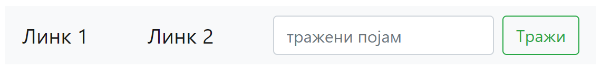
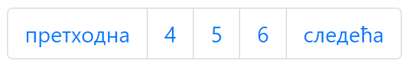
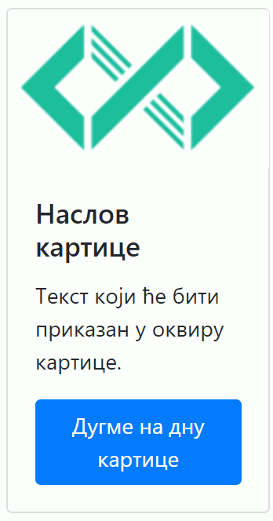
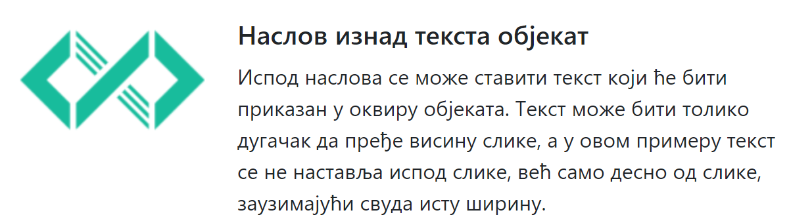

Уграђене Bootstrap компоненте¶
Једна од највећих вредности Twitter Bootstrap библиотеке је могућност једноставног стилизовања и мењања стила неких често коришћених компоненти, као што су табеле или поља за унос. Када желите да упознате ефекте појединих стилова компоненти, треба само да пронађете стил који вас интересује, копирате пример HTML кода и ставите га у своју страну. Ако вам стил одговара и желите да га употребите, У великом броју случајева ће бити довољно само да промените садржај у компоненти.
Компоненте се деле на:
- Основне компоненте, које представљају стандардне HTML елементе као што су поља за унос, листе или табеле.
- Сложене компоненте, које представљају комбинацију једне или више компоненти, од којих се граде сложене конструкције као што су табови, менији, галерије слика и слично.
Већ смо видели да нам Twitter Bootstrap библиотека омогућава конзистентно стилизовање основних компоненти. Поред тога, у Twitter Bootstrap библиотеци можемо наћи неке врло корисне сложене компоненте. У наставку ће бити описане неке од сложених компоненти које су нам на располагању у овој библиотеци.
Навигационе траке¶
Навигационе траке (Navbar, скраћено од енгл. navigation bar) су компоненте које се налазе на врху стране и садрже меније, логое и поља за претрагу која се виде на свакој страни.
{kind=link}
Када вам буде била потребна оваква компонента, довољно је само да убаците HTML кôд сличан овом:
<nav class="navbar navbar-light bg-light">
<a href="https://petlja.org" class="navbar-brand">Линк 1</a>
<a href="https://petlja.org" class="navbar-brand">Линк 2</a>
<form class="form-inline">
<input class="form-control mr-sm-2" type="search" placeholder="тражени појам" aria-label="Search">
<button class="btn btn-outline-success my-2 my-sm-0" type="submit">Тражи</button>
</form>
</nav>
Ова навигациона линија је <nav> блок, са којим смо се упознали у секцији о распореду елемената, са одговарајућим CSS класама. У овом блоку се налази линк, поље за претрагу и дугме којим се може претражити сајт (ако би се функционалност претраге била имплементирана).
Страничење¶
Страничење (енгл. pagination) је често коришћена компонента која се ставља на странама где се не приказују сви резултати, него је потребно преласком на следећу страну приказати нови скуп резултата. Пример једне компоненте за страничење која омогућава да се преће на претходну или следећу страну или да се директно пређе на прву, другу или трећу страну је приказана на слици:
{kind=link}
Ако вам је потребно да ставите компоненту за страничење на неку страну, довољно је да напишете HTML кôд приказан у следећем примеру:
<nav aria-label="Пример страничења">
<ul class="pagination">
<li class="page-item"><a class="page-link" href="#">претходна</a></li>
<li class="page-item"><a class="page-link" href="#">1</a></li>
<li class="page-item"><a class="page-link" href="#">2</a></li>
<li class="page-item"><a class="page-link" href="#">3</a></li>
<li class="page-item"><a class="page-link" href="#">следећа</a></li>
</ul>
</nav>
Као што видимо, у HTML треба у <nav> блок поставити обичне <ul> листе и додати одговарајуће CSS класе као што су pagination, page-item, чиме се добија стилизована контрола за страничење резултата.
Картице¶
Картице (енгл. Cards) су компоненте чија је главна функционалност да омогуће везе ка другим странама. За разлику од обичног линка, картица може да садржи наслов, слику, краћи текст и дугме које води ка страни најављеној овом картицом.
{kind=link}
HTML кôд овакве компоненте је приказан у следећем примеру:
<div class="card" style="width: 12rem;">
<img src="petlja_logo.png" class="card-img-top" alt="Слика која ће се приказати на врху картице">
<div class="card-body">
<h5 class="card-title">Наслов картице</h5>
<p class="card-text">Текст који ће бити приказан у оквиру картице.</p>
<a href="#" class="btn btn-primary">Дугме на дну картице</a>
</div>
</div>
Из датог примера видимо како можемо да направимо картицу: у један <div> блок постављамо HTML елементе за наслов (таг <h>), пасус текста (таг <p>) и линк (таг <а>), уз одговарајуће CSS класе. Тако на пример, линк је помоћу класе btn btn-primary стилизован као дугме. Захваљујући Twitter Bootstrap класама, прегледач ће ову структуру приказати као стилизовану контролу приказану изнад.
Медијски објекат¶
Медијски објекат је сличан картици приказаној у претходном примеру, уз разлику у чињеници да је сличица мања и постављена у линији са текстом, као што је приказано на следећој слици:
{kind=link}
HTML кôд овакве компоненте приказан је у следећем примеру:
<div class="media">
<img src="petlja_logo.png" class="mr-3" alt="Сличица која ће бити са леве стране">
<div class="media-body">
<h5 class="mt-0">Наслов изнад текста објекат</h5>
Испод наслова се може ставити текст који ће бити приказан у оквиру објеката.
Текст може бити толико дугачак да пређе висину слике,
а у том случају текст се не наставља испод слике, већ само десно од слике,
заузимајући свуда исту ширину.
</div>
</div>
Као што се може приметити, HTML кôд је веома сличан претходном. Кључна разлика је употреба другачијих CSS класа (media, media-body), чиме се добија потпуно другачији приказ.
Дијалози¶
Једна од најчешће коришћених компоненти у веб апликацијама је дијалог који приказује формулар или текст када се кликне на неко дугме, тако што се дијалог појави испред остатка текста.

Уз помоћ Twitter Bootstrap библиотеке се дијалог и дугме које га отвара лако имплементирају у HTML коду приказаном у следећа два примера. Прво је потребно поставити дугме које треба притиснути како би се отворио дијалог:
<!-- Дугме које ће отворити модални диалог -->
<button type="button" class="btn btn-primary"
data-toggle="modal" data-target="#ПримерМодалногДијалога">
Прикажи модални прозор за дијалог
</button>
<p>Остали садржај стране</p>
<!-- Структура модалног дијалога -->
<div class="modal fade" id="ПримерМодалногДијалога" tabindex="-1" role="dialog"
aria-labelledby="ПримерОзнакеНаслова" aria-hidden="true">
<div class="modal-dialog" role="document">
<div class="modal-content">
<div class="modal-header">
<h5 class="modal-title" id="ПримерОзнакеНаслова">Наслов дијалога</h5>
</div>
<div class="modal-body">
Садржај дијалога
</div>
<div class="modal-footer">
<button type="button" class="btn btn-secondary" data-dismiss="modal">Затвори</button>
<button type="button" class="btn btn-primary">Сачувај податке</button>
</div>
</div>
</div>
</div>
Довољно је додати једно дугме са атрибутом data-toggle и вредношћу modal, које ће у атрибуту data-target имати идентификатор дијалога којег треба да отвори (у овом случају ПримерМодалногДијалога).
Потом је потребно додати HTML кôд којим се представља садржај дијалога који ће бити приказан када се притисне дугме. Овај елемент мора да има вредност идентификатора која се слаже са вредношћу из data-target атрибута дугмета приказаног у претходном примеру.
У <div> блоку који представља садржај дијалога се могу додати различити елементи којима ће се направити бољи изглед дијалога. На пример, ако се дода <div> са класом modal-header, садржај у њему ће се приказати као заглавље унутар дијалога. Садржај у <div> блоку са класом modal-footer ће се приказати на дну дијалога. На овај начин се веома лако може направити изглед дијалога који вам је потребан.
Закључак¶
У овој лекцији сте могли да видите неколико уграђених компоненти и кôд који треба да ставите у страну како би те компоненте биле приказане. Могућност да једноставно ископирате компоненте и слажете их у веб страну су једна од највећих олакшица у библиотеци Twitter Bootstrap. Компоненте приказане у овој секцији су само неке од оних које су на располагању као што су Alerts, Badge, Breadcrumb, Buttons, Button group, Card, Carousel, Collapse, Dropdowns, Forms, Input group, Jumbotron, List group, Media object, Modal, Navs, Navbar, Pagination, Popovers, Progress, Scrollspy, Spinners, Toasts и Tooltips. Погледајте ове компоненте и пронађите неке занимљиве, пошто ће вам користити да знате да нека компонента постоји у случају да приметите да је потребна на веб страни.